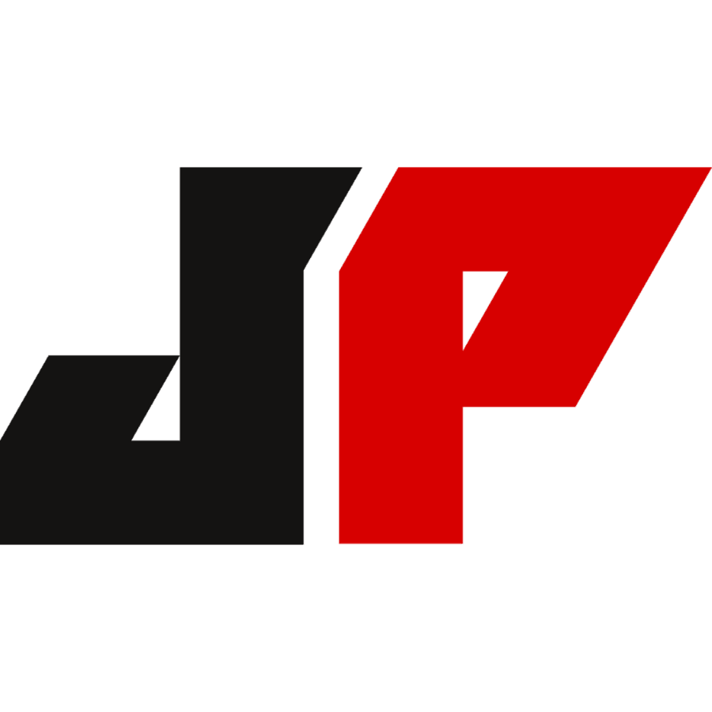
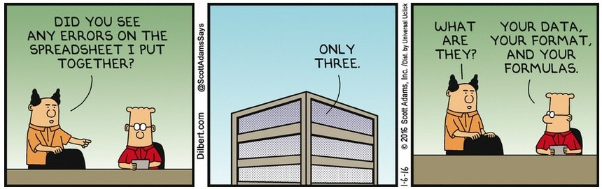
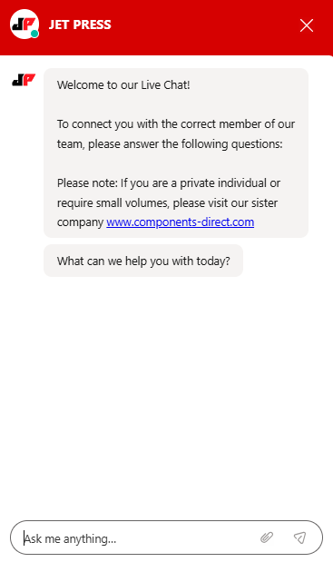

The Rio Olympics was the first Games to include a Refugee Olympic Team, with 10 athletes who had no country to compete for. They marched under the Olympic flag and became one of the most celebrated moments of the opening ceremony.
Amazon Prime Video launched its first major original hit, Transparent, before Netflix had even finished its first year of original programming. But the real surprise is that Prime membership was originally sold purely as a shipping benefit in 2005, and video was quietly added years later almost as an afterthought.
TikTok's algorithm is so effective that it reportedly took 35 minutes on average for a brand new account with zero followers and no history to land on its first piece of highly personalised content. The "For You Page" figures out your interests faster than most recommendation systems that have years of your data to work with.
Each rebuild was driven by data, user behaviour and commercial need. But launching the site was never the finish line. Below are some of the features implemented since launch.
Visual Rebrand
The JET PRESS logo was never going to change. The challenge was bringing Components Direct closer to it, creating a visual connection between the two brands without losing their individual identities.
The answer was a consistent colour scheme and a modernised logo.
BeforeAfter
Two new icons were also created. In the age of social media, an icon is just as important as the logo itself, it's the first thing people see.

JET PRESS
Components Direct
Site Map Restructure
Before you build, you plan. Every page, every category, every user journey mapped out in full before anything went live.
Working across departments to understand what content existed, what was missing, and what needed to move. Lots of spreadsheets. Lots of conversations. But getting the architecture right from the start meant everything built on top of it had a solid foundation.

Live Chat
Not everyone picks up the phone anymore. For a new generation of buyers, live chat is how you make first contact, and if it's not there, they leave.
I pushed for this despite pushback from sales and customer service, who'd tried it before and found it created more noise than value. Their concern was valid. So we solved it.
This time we built it properly. Smart routing, qualifying questions upfront, directing users to the right person before the conversation even started. Less noise. More qualified conversations. Better experience for everyone.

On brand. Instantly recognisable.
Sets expectations immediately.
Filters the wrong audience before the conversation starts.
Directs the user to the right person from the outset.
Frictionless. No forms. No phone calls.
On brand. Instantly recognisable.
Sets expectations immediately.
Filters the wrong audience before the conversation starts.
Directs the user to the right person from the outset.
Frictionless. No forms. No phone calls.
Custom Filter System
Every competitor had one. We didn't. And you could feel it in the data, users landing, searching, and leaving because they couldn't find what they needed fast enough.
Tens of thousands of products. Every one needing accurate data, correct categorisation, and a logical place in the filter architecture. Spreadsheet heavy, hours of calls with developers, and constant tinkering at every step.
A small team. A mammoth task. But a non-negotiable one.
The result: a filter system built around how customers actually search, not how the business organises its stock.